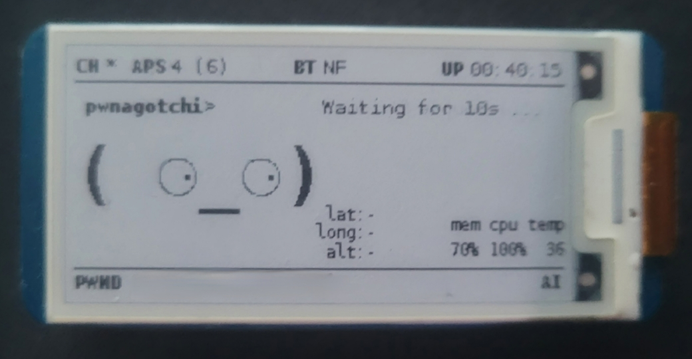

Table of Contents
Social engineering is a method of manipulation employed by threat actors to deceive and exploit individuals, targeting human psychology rather than technology itself. It remains the most effective initial access vector in real-world breaches—over 90% of successful cyberattacks begin with some form of social engineering. No firewall, IDS, or endpoint agent can fully compensate for a manipulated human decision.
Threat actors often use open-source intelligence (OSINT) to gather information about their potential victims. What they learn through OSINT is then used to design attacks tailored to the interests, habits, and vulnerabilities of a particular individual or organization. A threat actor will exploit their targets by appealing to emotions—trust, fear, curiosity, and greed—with the goal of making the person act impulsively without investigating further.
The history of social engineering predates the digital age, but no figure embodies it more than Kevin Mitnick—whose exploits demonstrated that the human element is, and always will be, the weakest link in any security architecture.
Kevin Mitnick & The Art of Deception
Kevin Mitnick was once the FBI's most wanted hacker, but the majority of his intrusions relied not on technical exploits but on social engineering. By impersonating IT staff, technicians, and corporate employees over the phone, Mitnick convinced people to hand over credentials, dial-in numbers, and internal system access. He compromised organizations including Motorola, Nokia, Sun Microsystems, and Pacific Bell—often without writing a single line of exploit code.
Mitnick's approach followed a pattern that remains the blueprint for modern social engineering: research the target through publicly available information (what we now call OSINT), build a credible pretext using internal jargon and organizational knowledge, and exploit trust to extract credentials or access. His book The Art of Deception (2002) documented these techniques in detail and remains one of the most referenced texts in security awareness training.
What made Mitnick effective was his understanding that people inherently want to be helpful. A convincing phone call from someone who sounds like they belong—who knows the right names, the right systems, the right terminology—bypasses every technical control in place. This principle hasn't changed. The tools have evolved (phishing kits, deepfake audio, AI-generated pretexts), but the underlying psychology is the same one Mitnick exploited decades ago.
Attack Vectors
HIGH THREAT
Phishing
Crafted emails or messages impersonating trusted entities to extract credentials, deploy payloads, or redirect to spoofed login portals. Spear phishing targets specific individuals with researched pretexts.
HIGH THREAT
Pretexting
The attacker fabricates a scenario (pretext) to build trust and extract information. Unlike phishing, this often involves sustained, interactive deception over the phone or in person.
MEDIUM THREAT
Baiting
Exploits curiosity or greed by offering something enticing. Malware-laden USB drives left in parking lots, free software downloads with embedded backdoors, or fake job offers containing weaponized documents.
MEDIUM THREAT
Tailgating / Piggybacking
Gaining physical access to restricted areas by following authorized personnel through secured doors. Often combined with pretexting—wearing a uniform, carrying boxes, or pretending to talk on the phone.
HIGH THREAT
Vishing / Smishing
Voice phishing (vishing) and SMS phishing (smishing) use phone calls and text messages to create urgency. Caller ID spoofing makes the attack appear to originate from legitimate numbers.
MEDIUM THREAT
Watering Hole
Compromising a website frequently visited by the target group. Instead of attacking the target directly, the attacker infects a trusted third-party site and waits for the victim to visit.
OSINT & The Social Engineering Toolkit
Modern social engineering attacks typically begin with an OSINT reconnaissance phase. A threat actor analyzes a target's social media presence, public records, professional profiles, and online activity to build a profile that informs the attack. The more specific the pretext, the more convincing the attack—this is what separates generic spam from targeted spear phishing.
Consider the following scenario: a threat actor discovers through OSINT that an individual trades cryptocurrency and uses the Blockchain exchange. Recent posts on social media reveal the individual expressed concerns over security breaches on a different exchange. The threat actor crafts a phishing email prompting the target to change their Blockchain password due to an "attempted security breach"—preying directly upon the security concerns they had already expressed publicly.
The Social Engineering Toolkit (SET) is an open-source framework designed for exactly this type of attack. SET can clone the HTML and CSS from a legitimate login page, host the replica on a command-and-control server, and capture any credentials the victim enters on the spoofed site. The attacker combines this technical infrastructure with non-technical tactics—spoofed email addresses, valid-looking security certificates, and typosquatted domains—to make the entire chain appear legitimate.
This is the reality of modern social engineering: it is rarely just a technical exploit or just a human manipulation. It is a combination of both. The attacker uses technology to build a convincing stage (cloned websites, spoofed emails, C2 infrastructure) and psychology to get the target to walk onto it. Mitnick did the same thing with a telephone and a notepad—the tools have changed, but the methodology is identical.
Pwnagotchi: AI-Driven Wireless Capture
Mitnick proved that physical access is often the ultimate force multiplier for social engineering. Physical proximity attacks go hand-in-hand with the pretexting and tailgating techniques described above—while an attacker builds rapport at the front desk or follows an employee through a secured door, a small device in their pocket can be passively harvesting wireless credentials from the surrounding environment. The Pwnagotchi is one such device—an open-source, AI-powered tool built on a Raspberry Pi Zero W that automates WPA/WPA2 handshake capture.

The Pwnagotchi uses an A2C (Advantage Actor-Critic) reinforcement learning model to optimize its handshake capture strategy over time. It channel-hops across nearby access points, sends targeted deauthentication frames to force client reconnections, and captures the resulting WPA/WPA2 handshakes. The AI learns from each session—adapting its timing, channel selection, and deauthentication patterns to maximize the number of handshakes collected in a given environment.
The device runs headless on a Raspberry Pi Zero W with a Waveshare e-ink display that provides real-time status: the number of access points in range, captured handshakes (PWND), memory and CPU usage, and an expressive face that reflects how well the AI is performing. The low power draw and small form factor make it easy to conceal during a physical engagement.
Captured handshake files (.pcap) can be transferred to a more powerful machine and cracked offline using tools like Hashcat or Aircrack-ng with wordlists such as rockyou.txt. Weak or commonly reused Wi-Fi passwords can be recovered in seconds, granting the attacker network access without ever interacting with a single user.
This is where physical security and wireless security intersect. A social engineering engagement that gets an attacker inside the building—even briefly—can also yield wireless credentials passively. The Pwnagotchi demonstrates why organizations need to treat wireless security with the same rigor as perimeter defense: strong WPA3 enforcement, complex PSKs, 802.1X enterprise authentication, wireless intrusion detection, and physical access controls that limit unauthorized proximity to access points.
The Psychology Behind It
Every social engineering attack—from Mitnick's phone calls to SET-powered phishing campaigns to a Pwnagotchi in someone's pocket—exploits the same core emotional triggers: trust, fear, curiosity, and greed. The cryptocurrency phishing example works because it preys on fear. Baiting with a USB drive labeled "Salary Review" exploits curiosity and greed. Pretexting as IT staff leverages trust and authority. These emotional triggers map directly to Cialdini's established framework of influence.
Cialdini's 6 Principles of Influence
Social engineers weaponize the same psychological principles that drive normal human behavior. Mitnick relied heavily on authority and liking. Phishing campaigns exploit scarcity and social proof. Recognizing these patterns is the first step in building resilience.
- Reciprocity — "I did something for you, now you owe me." Attackers offer help or information before making a request.
- Commitment — Once someone agrees to a small request, they're more likely to comply with larger ones. Foot-in-the-door escalation.
- Social Proof — "Everyone else is doing it." Fabricated testimonials, fake urgency around widespread adoption, or impersonating colleagues.
- Authority — Impersonating someone with power—IT admin, CEO, law enforcement—to bypass critical thinking.
- Liking — People comply more readily with those they find agreeable. Rapport building, flattery, and finding common ground.
- Scarcity — "Act now or lose access." Artificial time pressure forces hasty decisions that bypass rational analysis.
Building Resilience
While technology plays an essential role in facilitating and defending against social engineering attacks, the human element remains the most critical factor. Many anti-viruses, email filters, and firewalls rely on blocklists of known command-and-control sites, making zero-day threats difficult to detect and block—even with more advanced security apparatuses such as IDPS systems. Implementing strict access controls and following the principle of least privilege is essential for limiting the damage that can be done once an attacker gains initial access through social engineering. As Mitnick himself argued, end-user education in identifying social engineering attacks is the single most effective measure for reducing organizational vulnerability.
Verify Identity
Always confirm requests through a separate, trusted channel. Call back on a known number. Never trust caller ID alone.
Security Training
Regular phishing simulations and awareness programs. Employees should be able to identify pretexting and urgency tactics.
MFA Everywhere
Multi-factor authentication limits the damage of stolen credentials. Even if a phished password is captured via SET, MFA blocks account access. Hardware tokens (FIDO2) are the strongest option.
Clear Policies
Documented procedures for credential resets, access requests, and financial transfers. No exceptions for "urgent" requests.
Report Culture
Foster a blame-free environment for reporting suspicious interactions. Faster reporting limits attacker dwell time.
Technical Controls
Email filtering, DMARC/SPF/DKIM, URL sandboxing, USB device policies, and network segmentation as layered defenses.